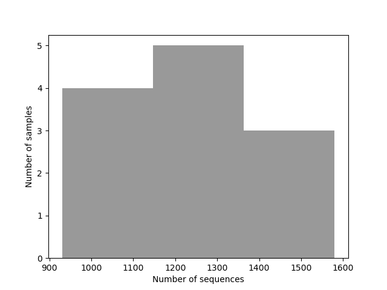

Demultiplexed sequence counts summary
forward reads
Minimum
930
Median
1185
Mean
1246.67
Maximum
1580
Total
14960
Forward Reads Frequency Histogram

Download as PDF
Reverse Reads Frequency Histogram
No reads in this direction
Per-sample sequence counts
Total Samples: 12 (forward)
forward sequence count
sample ID
12
1580
8
1570
7
1550
9
1320
1
1310
4
1200
6
1170
3
1170
10
1070
5
1060
11
1030
2
930
Download as TSV